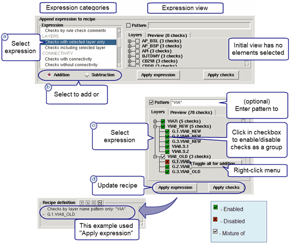

The advanced
editing controls in the Calibre RealTime Recipe Editor allow you
to select checks by layer, select checks that did or did not produce
results, and select and unselect individual rule checks. Unselecting
individual checks is useful if a particular check gives false errors
when run on a limited area.
Procedure
- Open a recipe for editing
and make selections using the basic editing controls, as described
in “Basic Editing of Check Selection Recipes”.
- Click the Advanced button
to expand the advanced editing controls. See Figure 2 in Calibre RealTime Recipe Editor Dialog Box for a view
of the dialog box.
View the check selection recipe in the Recipe definition
area.
- Do the following to add an
expression to the recipe definition:
- Select an expression category
in the Expression area. The expressions categories are defined in “Calibre RealTime Recipe Editor Dialog Box”.
- Specify “Addition” or “Subtraction”
below the Expression area to indicate whether you want to include
or exclude the checks in the expression. Included checks are indicated
with a and
excluded checks are indicated with a .
- In the expression view area
on the right, select items that you want to be part of the expression.
The view in this area depends on the expression category. You can
use the following methods to select checks:
Click the checkbox next
to the check (or layer name if selecting by layer).
Right-click for the selection
menu. In the Layers tab, you must right-click
a selection to open the menu. In addition, there is only one menu
selection available for the Layers tab, unlike
the other expression views.
If the Pattern option
is available, specify a wildcard pattern.
Some expression categories
have a separate Preview tab which displays
the checks that are selected by the expression.
- Click Apply expression or Apply
checks to update the check recipe definition.
The following figure shows
Steps 3.a-3.d for the “Checks
with selected layer only” expression, which selects checks by layer.
Figure 1. Advanced Recipe Editor
Controls
- Repeat Step 3 as necessary
to add more expressions to the check recipe definition.
- View the check recipe in the
Recipe definition area. You can use the buttons to
move an expression up or down in the list, remove an expression,
or resolve an expression into the equivalent list of rule checks.
Tip If you want to only run checks
that are selected in the rule file when using a custom check recipe,
go to the Expression area, select “Checks not selected in the rules
file,” enable “Subtraction,” and click the Apply expression button.
Make sure the expression “- Checks not selected in the rules file”
is the last expression in the recipe definition.
- View the list of included
and excluded checks in the “Recipe checks” area. The Groups tab
is included if check groups are created in the rule file with the Group statement.
A green check mark indicates
that the rule check or group is included in the recipe. A red X
indicates the item is not included. Click the checkbox next to an
item to include or exclude it from the recipe.
In the Checks tab
you can right-click for a menu to add and subtract checks. You can also
enter a filter pattern to filter the rule checks that are shown
in the Checks tab.
Figure 2. Recipe Definition
Controls
- (Optional) To save the check
recipe to a file, click Export in the top
button bar. The recipe file can be imported by other users with
the Import button.
- Click OK to
save the recipe and exit the dialog box.